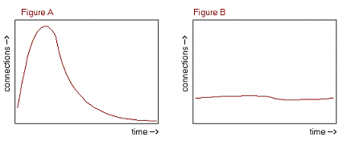

![[diverging arrows]](splitarrow.png)
Derek Bobbe
Shuk-Yin "Fion" Choi
Adam Howard
Mark Riley
Adam: Project Motivation; Architectural Specifications; Operational Planning
Fion: Cover Page; Economic Aspects; Implementation Details; Final Recommendations and Conclusion (Review)
Derek: Abstract; Table of Contents; Scope of Business Case; Background of FA Office; Justifying the Strategic Investment; Vendor and Service Provider; Technology and Equipment (Server software)
Mark: Competitive Advantage; Outsourcing vs. In-house; Technology and Equipment (Server Hardware and Configuration); Final Recommendations and Conclusion (Summary of Recommendation)
After a thorough study of the business environment surrounding the UW Financial Aid Office, we compiled the following document providing an informative explanation of requirements surrounding additional web functionality as well as a programming template for the actual implementation of this functionality. From a financial standpoint, we considered only bare-minimum requirements for the system as well as expected cash flow savings. In addition to this conservative financial analysis, we also included several additional propositions for the office should there be room within future budgets. These propositions include a Dell PowerEdge 6450 with additional UPS and RAID functionalities and the hiring of additional DoIT consultants. The current networking structure, a PVC of 100MB, should be sufficient to cover requirements; however, an additional allocation of optional SVC may be appropriate during the busiest time of the Financial Aid annum.
This project was ultimately a valuable learning experience because it created in us a sensitivity to the numerous considerations that one must undertake before implementing a web solution. The size, stability, and flexibility of the network are especially important when considering a secure, customer-oriented system like the one we chose to implement at the Financial Aid Office. This stability depends on a number of disparate factors, which we explore in the following pages.
In order to provide the Financial Aid office with the most relevant and useful technological solutions, we met with both the lead functional and technical Information Technology personnel for the office. During our communications, we found that they had already decided to implement a number of the same ideas we had already had for improving their system. For instance, one of their technical analysts is currently in the process of developing an interactive web page that will allow students to view their grants and aid online and decide which portions of the aid they will either accept or decline. The web page will be placed on the Financial Aid website.
In addition to the current project discussed above, our group decided to focus on making two additional forms interactive as well as providing an online help system for students filling out one of all of the three forms to be placed on the Financial Aid website. The two online forms we will suggest are the "institutional" and "family information forms. The online help system will be analyzed according to current E-Commerce and E-Business models and will aim to provide students with timely, relevant assistance while balancing these customer needs with the number of skilled hours that must be spent maintaining the website.
By making all but the federal tax forms interactive, our business model will aim to effectively eliminate thousands of dollars in annual costs due to mailings and human hours. The online help system will be especially effective in answering the common financial aid questions of students before they are brought to skilled, busy financial aid representatives.
During the past ten years, the U.S. level of inflation has been extraordinarily low. However, due to a changing international economy that demands highly-skilled, well-educated, and culturally sensitive workers, the price of college tuition has steadily increased at a rate twice that of inflation. As the price of college tuition grows more burdensome to students who do not have abundant resources available for their college educations, financial aid offices are become increasingly important to the effective distribution of grants, scholarships, and loans to those who are in need of monetary assistance for the completion of the respective programs.
Each year, the University of Wisconsin-Madison Financial Aid Office assists over 18,000 graduate and undergraduate students to finance their college expenditures. The primary duties of the Financial Aid Office include: the collection of necessary financial documents and aid applications, the assessment of each individual student's need and eligibility for aid, and the assurance of a timely and proper disbursement of aid through the UW Bursar's Office. In addition to these primary duties, the aid office also works together with a number of different financial institutions in order to ensure that students have available venues to receive federally subsidized and/or unsubsidized loans.
In order to determine each individual student's financial need, the Financial Aid Office must request and store a large amount of student data. Up until 1998, they used a legacy system and mainframe database as their primary computer system. In 1998, UW-Madison was named one of the secondary charter schools and for the PeopleSoft enterprise system. Thus, they received the beta addition of the PeopleSoft application. This system was implemented in December 1998 and is the heart of the current Financial Aid information system. Like other UW-Madison offices, the Financial Aid office utilizes an Oracle database that is administered by the DoIT office and allows for the sharing of student data throughout the campus (i.e. bursar's office, colleges and schools of the university, registrar's office, etc.). The office currently has one full-time IT employees as well as two additional DoIT consultants working on their systems.
Due to the fact that the Financial Aid office is located at the heart of campus, they already have access to very high-speed networking infrastructure. Their current available bandwidth is 100MB per second -- a significant portion of this bandwidth is still available for future uses.
The following flow diagram was constructed in order to illustrate a high-level understanding of the financial aid process:
![[Financial Aid flowchart]](aid_flowchart.png)
What is most interesting about our work is that we are working to help e-enable this university's financial aid office. With the financial aid process streamlined and online, students will better be able to track their financial aid information, and update that information in just minutes, compared to days or weeks by mail. This should appeal to today's typical computer-savvy college students.
Since the infrastructure for enabling this process is largely in place already, with connectivity through the campus LAN, the majority of the cost of this project is already taken care of, so that aside from the purchase of a server computer, the financial aid office can focus on the higher-level aspects of this project, rather than spend a lot of time on budgetary concerns.
Instead of organization this discussion around a specific business plan to help the UW Financial Aid Office implement their new system, we explored a number of broad areas that relate to the technological and financial feasibility of the web project. In effect, the first six sections of the body discuss these broad areas while the seventh section is used to discuss the actual details of the ASP and HTML code which we have proposed for the implementation of the new web forms.
When applying a financial analysis to any business project, one must first estimate a project's economic outflows and inflows before applying the appropriate financial methodologies. In the case of the Financial Aid Office, the calculation of estimated outflows is very much dependent upon whether or not a new employee must be temporarily hired in order to assist in the support of the additional technological capabilities of the organization.
The current functional lead of the UW Financial Aid Office does not foresee the need for the hiring of a new full-time employee for the purposes of the additional proposed functionalities. However, she admits that there will probably additional system complexities that may warrant the need for temporary help.
Because it is unclear whether or not temporary help will be hired for back-end technical assistance, we used two different financial models -- the first assumes that additional help will not be needed and the second assumes that additional help will be needed for two years. In this way, when the Financial Aid Office has a clearer picture of the necessary work hours, they can make a comparison between financial models and make a more informed decision.
Both models will employ the same methodologies for the project. The first methodology that will be applied is the "Net Present Value" or NPV. Using the estimated inflows and outflows, NPV measures the current value (in $ terms) of a project. If the NPV exceeds $0, the project is estimated to be profitable and, therefore, should theoretically be undertaken. The second methodology that should be used is the "Internal Rate of Return" or IRR. Unlike NPV, IRR is stated in percentage terms and is used to state the rate of wealth creation that occurs during the course of a given project. If the IRR exceeds the current market rate of interest, then a project is assumed to be profitable and should theoretically be undertaken.
| Economic Outflows ($) | ||||
|---|---|---|---|---|
| # | Type | Periodicity | Units x Cost/Unit | Cost |
| 1 | Web Development | Initial only | 120 X $25 | $3,000 |
| 2 | Additional Back-end upkeep | Yearly | N/A | $1,500 |
| Total Initial Outflows: | $3,000 | |||
| Total Yearly Outflows: | $1,500 | |||
| Economic Inflows ($) | ||||
|---|---|---|---|---|
| # | Type | Periodicity | Units x Cost/Unit | Cost |
| 1 | Envelope Savings | Yearly | 56,000 X $0.02 | $1,120 |
| 2 | Stamps Savings | Yearly | 56,000 X $0.30 (bulk) | $16,800 |
| 3 | Paper Savings | Yearly | 105,566 X $0.01 | $1,056 |
| Total Initial Inflows: | -0- | |||
| Total Yearly Inflows: | $18,876 | |||
| Net Yearly Inflows: | $17,376 | |||
| Financial Methodology | Years | Interest Rate | Result |
|---|---|---|---|
| Net Present Value | 5 | 4 | $74,354.86 |
| Net Present Value | 5 | 6 | $70,194.03 |
| Net Present Value | 10 | 4 | $137,934.93 |
| Net Present Value | 10 | 6 | $124,888.87 |
| Internal Rate of Return | 5 | N/A | 579.15% |
| Internal Rate of Return | 10 | N/A | 570.2% |
Assuming the aforementioned cash flows, one can see that the automation of financial aid project is profitable according to both the NPV and IRR methods. However, it is important to note that these numbers are highly dependent on the assumption that the Financial Aid Office will no longer need to send out hard copy mailings. In addition, one must also note that the IRR is extraordinarily high due to the fact that there is a very small initial investment in this particular case.
| Economic Outflows ($) | ||||
|---|---|---|---|---|
| # | Type | Periodicity | Units X Cost/Unit | Cost |
| 1 | Web Development | Initial only | 120 X $25 | $3,000 |
| 2 | Temp Consultant | Two years | 2,080 X $50 | $104,000 |
| 3 | Additional Back-end upkeep | Yearly | N/A | $1,500 |
| Total Initial Outflows: | $3,000 | |||
| Total Yearly Outflows: | $1,500 | |||
| Temporary Outflows | $104,000 | |||
| Economic Inflows ($) | ||||
|---|---|---|---|---|
| # | Type | Periodicity | Units X Cost/Unit | Cost |
| 1 | Envelope Savings | Yearly | 56,000 X $0.02 | $1,120 |
| 2 | Stamps Savings | Yearly | 56,000 X $0.30 (bulk) | $16,800 |
| 3 | Paper Savings | Yearly | 105,566 X $0.01 | $1,056 |
| Total Initial Inflows: | -0- | |||
| Total Yearly Inflows: | $18,976 | |||
| Total Net Inflows (not including initial salaries expense): | $17,776 | |||
| Financial Methodology | Years | Interest Rate | Result |
|---|---|---|---|
| Net Present Value | 5 | 4 | ($130,749.02) |
| Net Present Value | 5 | 6 | ($133,064.42) |
| Net Present Value | 10 | 4 | ($65,705.33) |
| Net Present Value | 10 | 6 | ($77,110.49) |
| Internal Rate of Return | 5 | N/A | (3.54%) |
| Internal Rate of Return | 10 | N/A | (27.17%) |
The results from the second case are radically different from the first case. Clearly, the decision to hire a new worker in order to implement the new website will result in drastic financial results. On the other hand, the Financial Aid Office may decide that the intangible benefits gained from a new system (i.e. higher college rankings, increased quality of enrollees) may easily outweigh the costs associated with this new project.
Disclaimer: It is important to note that there are additional factors to take into account beyond the traditional methodologies of NPV and IRR. In today's fast moving technological world, many businesses must undertake additional web-based functionalities or risk being put out of business due to market pressures (i.e. network speed and subsequent customer satisfaction). However, the non-profit nature of the Financial Aid Office is different from a profit seeking enterprise and, therefore, they are do not run the same risk of being "put out of business." Even so, non-profit entities like the Financial Office must still consider obsolescence factors due to the fact that they are essentially competing versus financial aid offices of other institutions of higher education that compete against UW-Madison enrollment.
Because the Financial Aid Department does not directly compete with other financial aid departments, it is hard to measure the competitive advantage of our proposed system. Therefore our group will analyze how the Financial Aid Department's performance influences the competitive advantages of the University of Wisconsin-Madison as a whole.
Universities throughout the country strive to recruit the best students. One of the tools used to raise students' interest in a school is the school's national placement. The higher a school's ranking, the more of a competitive edge it has over other schools at attracting the best students.
U.S. News & World Report, a weekly national newsmagazine, does the most famous ranking of colleges and universities in the United States. Its "Best Values" survey ranks schools based on getting the most for your money. The following explanation of the ranking methodology used by U.S. News & World Report is from the company's Web site at http://www.usnews.com/.
To determine which schools offer families the best value, we use a formula that relates a school's academic quality, as indicated by its overall U.S. News ranking, to the net cost to a student who receives the average level of financial aid. The higher the quality of the school's academic program and the lower the cost to the student, the better the deal.
These rankings were based on three variables:
Overall rank was determined first by standardizing the scores achieved by every school in each of the three variables and weighting those scores. The first variable -- the ratio of quality to price -- accounted for 60 percent of the overall score; the percentage of all undergraduates receiving grants accounted for 25 percent; and the average discount accounted for 15 percent. The weighted scores for each school were totaled. The school with the highest total weighted points became No. 1 in its category. Next, the score was converted to a percentile of 100.
The scores for the other schools were then converted into a percentage of that achieved by the No. 1 school and the schools were ranked in descending order.
As you can see, the amount of financial aid available to students is a major factor in determining a university's rank. The University of Wisconsin-Madison's overall quality ranking by U.S. News & World Report is a very reputable 35. Furthermore, when compared only against public universities, our Wisconsin is ranked eighth! On the other hand, when compared to other universities usually only the financial aid related "Best Value" rankings, UW-Madison doesn't even make the list. Our proposed system will help the Financial Aid Department streamline its operations, thereby indirectly increasing UW-Madison's competitive edge in the rankings. This could happen through several means. First, the number of employees needed by the department will decrease, lowering the budget requirements. The newly freed capital could be directly applied to the financial aid reserves. Second, improved efficiency would create more opportunities to lobby the State of Wisconsin for more funding, and to solicit more donations from corporations and wealthy alumni.
The architecture selected for this project depends on several factors, including network traffic requirements, reliability requirements, and any project cost restraints. Meeting both of these constraints requires balancing expected results with what can be afforded.
The architecture appropriate for this project is largely dependant upon the amount of traffic that will be generated. The forms that we have proposed to put online will do not themselves contain large amounts of data. However, since 2-4 forms are sent to 38,000 aid applicants, and those are then returned by approximately 18,000 students, we end up with about 50,000 of these forms. Additionally, if email notice will be generated and sent to every applicant at once, the possibility exists for thousands of concurrent connections to the web server. Additionally, the web server must make as many connections to the University's Oracle database located at DoIT to verify and update the financial aid records for each student. For most of the time, however, this server may be sitting idle, since most students take care of the financial aid forms during the same period, in order to be sure to receive their financial aid on time.
This web server could be required to function over a large range of traffic conditions, from small numbers of concurrent connections to possibly thousands of simultaneous connections, both to students' web browsers and to the backend database.
To accommodate the high traffic situations would require a high-end server with fast components or several servers operating in a load-balancing fashion. To ensure that the web server performs reliably, it will certainly need to a well planned backup strategy, take advantage of RAID hard disc mirroring, and run off of an uninterruptible power supply (UPS). A more costly option would be to have multiple systems running in parallel or load balanced fashion with separate network and power circuit connections, with one system able to take over should one fail.
Cost constraints limit the available options. Depending on the budget allotted for this project, the project may not be able to afford the biggest, fastest system.
Various options exist that allow for different costs: choice of server hardware (processor type, amount of RAM, amount of RAID hard disc storage), choice of operating system (Unix vs. Microsoft Windows NT/2000), and the choice of a single server or multiple load balanced servers. To allow the system to function well while lowering the price of the server, the financial aid dept may consider spreading out the load over time: instead of sending out email notification to every student at once, possibly resulting in many thousands of simultaneous connections (Figure A), they can send them out over a period of time, a week perhaps, to maintain a more reasonable number of concurrent connections (Figure B), rather than a sudden peak.  This could allow the department to rely on only one server, rather than several load-balanced servers that may sit idle much of the time. In addition the hardware considerations, the department may wish to consider different operating systems to determine which has the lowest total cost of ownership (TCO). For example, FreeBSD and Apache web servers have proven themselves powerful enough to run some of the busiest Internet sites, and both that OS and the web server are available for free. However, unless the department already has a qualified Unix system administrator, the additional costs of hiring someone may outweigh the cost savings.
In addition to the aforementioned financial benefits of implementing a new web-based system, there are also a number of intangible economic benefits that will be improved in the Financial Aid Office should this business plan be implemented. In particular, this section will address the following non-monetary aspects that will result in intangible economic benefits: reduced processing time, increased customer convenience, and reduced errors.
By making the "institutional" and "family information" forms online, the Financial Aid Office can eliminate the step of manually entering the information into the database. Instead, the information will be readily available in electronic form. Having saved time, the Financial Aid Office can give the information to the counselors, who in turn can make decisions on offering aid packages at an earlier point of time. Thus, the response time to students will be greatly reduced.
Putting the forms online enables students to download and submit the forms 24 hours a day. These online actions are much more convenient than obtaining the paper forms from the Financial Aid office and returning the forms to the office by mail or in person. In addition, supplying the same information multiple times can be avoided. Examples of common information include: student name, social security number, and special circumstances that must be taken into account.
The online help feature gives even further convenience to students. By putting the frequently asked student questions and answers online, students who come across problems when filling out the application forms are likely to be able to find the answers to their problem. If not, they can submit their questions online and get back the answer via email in a short period of time.
One of the goals of our proposed upgrades is to reduce the potential errors that are bound to occur during the manual entrance of student information. There will surely be a decrease in incorrect data entrance after the new system takes the human error out of the error-checking process. This is especially important when specific fields are critical to the decision of whether or not a student will be offered a relatively favorable aid package.
The decision to outsource information technology services versus using in-house resources is an issue that many organizations face. Both paths have their advantages and disadvantages, some of which will be discussed here.
Outsourcing usually involves contracting with a firm to implement a solution while maintaining project control and management inside the organization. Outsourcing is an attractive solution to many organizations because it allows in-house resources to focus on core functions, save on personnel costs, increase flexibility, provide increased access to new technologies, and allow access to highly skilled personal who are experts at implementing change. Another positive is that a consultant can bring in innovative views and may see your business from a whole new angle, possibly avoiding destructive states of mind such as groupthink.
However, outsourcing is not always the best solution and the negative aspects must also be considered. Topics such as security and confidentiality of data and other information, control and ownership of the technology, lack of familiarity with the organizations processes, and need of support once the contract is fulfilled. Also, there is sometimes resistance to change from inside the organization. Employees may see the consultants as a threat and oppose changes to their (employees) tasks and processes.
The issue of costs could act as a positive or a negative, depending on the situation. The biggest negative cost issue for outsourcing is that a consultant can cost anywhere from two to ten times as much as a regular employee. On the positive side, however, the consultant will only be around short-term, while a full-time employee is usually a long-term investment.
The Department of Financial Aid at the University of Wisconsin - Madison currently uses a combination of department employees and contract employees from the Department of Information Technology (DoIT) at UW-Madison. One employee works full time for the department and there are two full-time consultants from DoIT. The cost of outsourcing DoIT consultants is about twice what it costs to hire somebody as a full-time employee. At first it looks as if it would be smarter to cut the contract with DoIT and hire two to four more full-time employees. However, considerations have been made in the departments budget for outsourcing from DoIT. Currently, enough funding is set up specifically for paying for DoIT employees, so it would be imprudent to not use the money for outsourcing.
Because the amount of funding for hiring DoIT consultants varies year-to-year with each new budget, more money could be allocated in the future to support the needs of this new system. The Department of Financial Aid should petition for more outsourcing funds to support its development needs. We recommend getting two more consultants from DoIT to handle the implementation of the new Web-enabled financial aid system, while the department employees manage the project and the consultants.
Unlike most other business entities, the Financial Aid Office has the luxury of not having to pay for Internet service. This luxury is due to the fact that they are automatically allocated server through the DoIT system by virtue of being a part of the University of Wisconsin-Madison. The greater service provider for DoIT is a company known as Napnet. However, for the purposes of our project, we did not compare the DoIT and Napnet with other intermediate and large ISPs because the Financial Aid Office has no compelling reason to compare these services with other ones. Instead of comparing service providers, we instead researched the networking capabilities of DoIT. In this section, we first provide a diagram of the DoIT/UW network, and then we discuss the use of ATM by DoIT.
The UW-Madison Division of Information Technology is the service provider for the entire UW Campus. The UW network under DoIT may either be classified as a large Local Area Network (LAN) or a small Metro Area Network (MAN). The following depicts this network:
In order to facilitate transmissions among its network, DoIT has chosen to use ATM technology. Using ATM, DoIT is able to offer two main types of connections to their customers (DoIT, 1).
The first type of connection used by DoIT is an ATM LAN Emulation SVC (Switched Virtual Circuit). SVC technology is ideal for customers who wish to configure and emulate LANs at different points around campus. A SVC especially helpful for the Financial Aid Office because it would allow for the exchange of student information with the bursars office, the back-end database located at DoIT, and other entities on the university requiring access to student information. A SVC also represents a dramatic cost savings to the university because it prevents the replication of general data that is used and updated by different departments from around campus. In effect, the unnecessary replication of data was one of the main reasons that UW decided to implement a general system known as ISIS using PeopleSoft Enterprise software. The second type of connection used by DoIT is a point-to-point ATM PVC (Permanent Virtual Circuit). PVC technology allows for a dedicated connection with a DoIT router and a virtually guaranteed method of data transfer. Using a dedicated PVC would be ideal for the Financial Aid Office when current Internet connections involve the exchange of important data with a student. While it is true that technology may be implemented to "rewind" a students transaction to the period before a connection (and data) was lost, it would greatly assist the overall administration of the system if such informational transactions were guaranteed a virtual circuit. On the other hand, from an overall cost-benefit perspective, it is not truly necessary for a simple informational transaction to be done over a PVC. Multimedia is not being used and the data is not time sensitive; thus, Financial Aid transactions could presumably be denied access to a PVC depending on the current system requirements of the UW campus. [Note: According to Financial Aid representatives, their office currently has access to 100MB of bandwidth on a PVC. However, we believe that this limit may actually be artificially low due to the limitation of their Category 3 and/or 5 cabling. If this cabling was replaced with a faster medium such as fiberoptic, the 100MB limit would likely increase substantially. Of course, this occurrence would cause DoIT to re-evaluate the appropriate limits of the office's PVC.]
In anticipation for the Financial Aid Office's need to purchase a new server, we first considered the most appropriate server software for the office's needs. After that, we decided that best hardware available in the server marketplace.
While determining the appropriate software necessary for the Financial Aid project, we took several elements into consideration. The single most important criterion set up under our analysis of this software was the ability of the server to provide extensive support to a web developer. This priority is critical due to the fact that the main objective of our project is to develop a website which allows for client-server connectivity between a posted website and the back-end database. The second tier of priorities considered during our search for a package included the ease of administration and security. The Financial Aid Office can save a great deal of resources if the administration of a given server does not require a great deal of training. This is especially important given the probable budget constraints undergone by the office. Security is, of course, incredibly important due to the fact that Financial Aid information is of a highly personal nature and a student would likely have grounds for a lawsuit is his/her information was not properly secured over an Internet transmission.
A number of server software packages were considered during our analysis. Fortunately, this field narrowed considerably following our decision for the Financial Aid Office to stick with their Windows NT operating system. With the operating system being known, we were able to then narrow down the best server package available for Windows NT.
The following paragraphs discuss each of the three servers taken into consideration by our team: the Microsoft Internet Information Server, the Netscape Enterprise Server, and the Website Professional Server (OReilly & Assoc.). After discussing each of these servers, a graphical comparative analysis is done. Finally, a recommendation for the foremost server package is given.
The Microsoft Internet Information Server or IIS is by far the most popular server for Windows NT users. Web developers are especially empowered by IIS because of its extensive support for Active Server Pages and ActiveX objects (Alwang, 1). In addition, IIS began fully supporting Java during and after its 3.0 release. By allowing support for Java, the IIS increases the ability of one to apply secure connections through Java while still enjoying an ability to rapidly develop richly functional applications in a less secure ASP environment. Other big advantages of ASP are that it makes database access extremely easy on the back-end while returning all requests to the front-end as standard HTML. Ultimately, this allows a developer to create "dynamic web sites and applications that are accessible by any browser (Alwang, 1)."
The second package considered by our team was the Netscape Enterprise Server. Recently voted the "Editor's Choice for cross-platform or UNIX" by PC magazine, this server allows a tremendous amount of flexibility and manageability for offices which rely on multiple operating systems (Alwang, 2). NES has performed tremendously well in tests versus other industry leading server packages and also allows a great deal of flexibility to an expert to reconfigure the server for his/her departments unique performance and management needs.
The third server package considered was the WebSite Professional by ' OReilly Associates. This package is specifically designed for web developers running their systems on Window 95 or NT (Freed, 1). The WebSite Professional supports Java, Visual Basic, and ColdFusion (a powerful client-server package similar to ASP). In addition, it offers several query examples that facilitate the development of an extensive front-end for one's database. The WebSite Professional is not capable of conforming for a large corporate site, but rather is designed more for an ISP or smaller intranet.
| Web-Dev | Administration | Security | Documentation | Cost | |
|---|---|---|---|---|---|
| IIS 3.0 | Excellent | Excellent | V. Good | V. Good | $0 |
| NES 2.0.1 | Excellent | Excellent | Good | V. Good | $1,295 |
| WebSite Prof. | V. Good | Good | V. Good | Excellent | $499 |
After a careful study of the three choices, we decided that the IIS 3.0 was the best available server package for the needs of the Financial Aid Office. As one can see, all three possible choices received very respectable grades with respect to the stated criteria for a sever package. However, IIS stood out due to the fact that the Financial Aid Office operates in an exclusive Windows NT environment. Therefore, there is no reason to implement the NES because cross platform capabilities are not a pressing issue (although there would be a possibility in the future). In addition, the cost of $0 for the IIS makes it an incredibly attractive option. Last but not least, the capabilities of IIS fit the needs of our projected ASP more succinctly than NES and Website Professional. Although both of these latter servers do support scripting, they do not include ADO capabilities. Website Professional, in particular, leans heavily on ColdFusion -- a software package whose owners have recently experienced tremendous financial problems.
In order to run a high-traffic Web site, the Department of Financial Aid will need either a high-performance server, or a cluster of servers that will be load balanced. We recommend going with a single high-performance server because the demand on the Web site will be high, but it is not mission critical to have the site up 100% of the time. If a student has an emergency and the Web site is down, they can still contact the Financial Aid Department through normal means (i.e. telephone). In fact, this would be the preferred method of communication in an emergency.
We will present specifications for two different servers: one from Dell Computer Corporation and one from Compaq. For several reasons, neither of these computers will come with an operating system. The first benefit is that there is a substantial cost savings to the Financial Aid department due to an academic licensing agreement with Microsoft, which allows people and departments affiliated with UW-Madison to receive software for little to no cost. The second benefit is that Financial Aid will be able to configure the server to fit into their domain and choose the role that it will serve (i.e. backup domain controller or member server). We recommend that the server be configured as a member server so that it does not have to worry about authenticating user logons or replicating the Security Accounts Manager (SAM) database. This will allow the server to focus its resources on serving Web pages.
| Dell Server Configuration | |
|---|---|
| Type: | Power Edge 6450 |
| Processor: | Dual Intel Pentium III Xeon 700 MHz/1M Cache |
| Memory (RAM): | 1GB SDRAM-4DIMMs |
| Hard Drive Configuration: | RAID 5 (Disk Striping with Parity) |
| Hard Drives (3): | 9GB 1" Ultra3 SCSI 7,200RPM |
| Primary Controller: | Quad Channel RAID Card with 128MB |
| Network Adapter: | Intel Pro 100S NIC with IP SEC Encryption |
| CDROM: | 17/40X EDI CD-ROM |
| Cost: | $9,864.60 |
| Compaq Server Configuration | |
|---|---|
| Type: | ProLiant DL 580 |
| Processor: | Dual Intel Pentium III Xeon 700MHz/1M Cache |
| Memory: | 1GB ECC SDRAM-8DIMMs |
| Hard Drive Configuration: | RAID 5 (Disk Striping with Parity) |
| Hard Drives (3): | 9.1GB Pluggable Universal Ultra2 SCSI 7,200RPM |
| Primary Controller: | Integrated Smart Array Controller |
| Network Adapter: | NC3134 Fast Ethernet 64B/66MHz Dual Port 10/100 PCI |
| CDROM: | High Speed Low IDE Low Profile |
| Cost: | $13,817.00 |
We recommend that the Department of Financial Aid purchase the Dell PowerEdge 6450. The main reason for this is, as you can see, there is a cost savings of almost $4000 for virtually identical hardware configurations.
Since this server will be serving a major function and also performing database transactions, we recommend purchasing a Uninterruptible Power Supply (UPS). An UPS (Uninterruptible Power Supply) provides a conditioned and dependable source of power to your electronic equipment when the main power source fails. These units protect against surges and spikes (filtering) in the power source, as well as provide a continuing source of battery power.
We recommend that the Department of Financial Aid purchase an American Power Conversion (APC) Smart-UPS 1400. Our reasons for choosing this unit are that it is rack-mountable, so it can be placed directly above or below the Dell server on the rack, and that it is designed to support high-traffic, enterprise servers. The detailed specifications for this unit are listed below.
| AMERICAN POWER CONVERSION SMART-UPS 1400 1400VA LINE INT ACCSLAN 5MIN-FULL 6-OUTLET BLACK | |||
|---|---|---|---|
| Equipment Protection Value: | $25,000 US Dollars | Included Software: | Drivers & Utilities |
| Energy Rating: | 480 Joules | Compliant Standards: | UL |
| Environmental Parameters: | Temperature: 0 C - 40 C Humidity: 0 - 95% | Battery Enclosure Type: | Proprietary |
| Warranty: | AC 120 V +/- 25% ( 50/60 Hz )- 1 x power NEMA 5-15, 2 years warranty | Voltage Required: | AC 120 V +/- 5% - 6 x power NEMA 5-15, AC 120 V +/- 25% (50/60 Hz) |
| Average Run Time: | 26.5 min at half load | Battery: | Lead Acid proprietary |
| Enclosure Color: | Black | Dimensions (WxDxH) / Weight: | UPS rack-mountable, 48.3 cm x 45.7 cm x UPS / rack-mountable 8.9 cm / 28.6 kg |
| Device Type: | UPS / rack-mountable | Capacity / Average Run Time: | 26.5 min at half load |
| Cable Included: | 1 x power cable - external | Service / Support Details: | 2 years x limited warranty bring-In parts and labor |
| Installed ( Max ): | Lead Acid | Load Rating: | Small LAN / file server |
| Networking: | None | Port(s) / Connector(s) Required: | None |
| Port(s) / Connector Type: | 1 x management RS-232C / 9 PIN D-Sub (DB-9) female | Power Provided: | 1400 VA |
| Rack Mounting Kit: | Included | Recharge Time: | 3 hours |
| Voltage Provided: | AC 120 V +/- 5% | Surge Suppression: | Standard |
| Cost | $791.95 | ||
In addition to using regular backups, we recommend that the Department of Financial Aid use an extra layer of data reliability. A Redundant Array of Inexpensive Disks (RAID) is a very common way to ensure that data is available in the event of hard disk failure.
The diagram above presents a good visual representation of the RAID 5 disk-striping configuration. In this scenario a set of at least three disks each allocate a 1/n ratio of space on each disk for parity information, where n is the number of disks in the set. This ensures that if any one of the disks fails, the information on that disk can be recreated from the remaining drives.
We are recommending RAID 5 over other RAID configurations for several reasons. The first reason is that it provides better data integrity than other configurations such as RAID 0, which is disk striping (no parity). A second reason is that it is a very common RAID configuration, so there would be a low learning curve for the staff at the Financial Aid Department. The final reason is that it provides the fast read data transaction rate. This is good because an Internet server is going to be almost completely to reading data from the disk to serve out to the World Wide Web.
Now that we have discussed the various factors that must be considered before new functionality is implemented, we are ready to present our solution for the UW Financial Aid Office. The following is a series of screen shots, together with HTML and ASP code (Note: this code is only a sample and not ready for a full launch):
The implementation of this system consists of several distinct phases: Installation (of hardware and software), Testing, and the final launch into Operation. We will examine each of these phases individually in greater depth.
The server upon which this system will run first needs to be installed and configured. If additional hard disc storage or backup drives are purchased through a different vendor than the server itself, these devices must be installed into the system. The system should be plugged into an UPS (Uninterruptible Power Supply), which will ensure a clean power source, free from surges or any other interruptions in power flow, which could damage the server. The server should be connected with a Cat-5 Ethernet cable to the buildings 100Base-T Ethernet network. Also, the server should be physically secured, using security cables (such as Kensington's Desktop MicroSaver Security System/Security Plates). If the environment where the server will be located is open and available to many people, additional security features might be considered, such as floppy drive locks, case locks, etc.
Once the hardware is installed, we need to install and configure the necessary software. If the servers operating system (OS) comes preloaded, it still needs to be configured properly, including setting the administrator and user passwords, configuring the Ethernet device for an IP address, setting up and formatting volumes, and setting permissions on files and directories. The OS should be updated with all the latest security fixes and bug patches. Once the OS is configured, any additional software needed for the system should be installed and configured, including the web server (IIS if the server is Windows NT/2000), database and transaction software (SQL Server and MTS), etc. All appropriate hotfixes for these software packages should be installed too. At this point it would be wise to do a complete backup of the server, so that if we need to restore the system, we will not have to go through the installation procedures for the OS and each software package. Once all the software packages are installed, we can install now all the files we need and have developed for our system: install all scripts, HTML pages, COM objects, ODBC data sources, etc.
There are two stages of testing that should be used, referred to here as alpha and beta testing. Alpha testing is our own in-house testing which will be performed, where we test the system with dummy data, to make sure we have no bugs in our logic, no problems with database connectivity, proper table/record locking, proper transaction rollback. Alpha testing should also include stress testing, where we determine the optimal maximum system load. Knowing the maximum load of the system will allow us to determine the best number of students to notify at once to come to the website and update their financial aid information.
Once the system has passed our alpha testing, we subject it to beta testing, with real-world data and real world users: we can select a percentage of students to test the system, and report back any problems they had with the system, including any undiscovered bugs, any difficulties with the interface, or lack of online documentation. Beta testing often uncovers bugs or difficulties with the design that could not have been found in a lab environment, but that could be detrimental if discovered once the system is in production.
When we are reasonably confident of the stability and accountability of our system we can launch it in full to all students, and begin our operations procedures. Once we have successfully implemented our system, we are charged with taking care of the basic maintenance procedures. Three key elements of our operational procedures include auditing the system regularly, making fixes to the system when necessary, and backing up the system as frequently as necessary. Following through with each of these sets of procedures will help to ensure that our system continues to work reliably into the future.
Borrowing from the Just In Time (JIT) production philosophy, we need a focus on preventative maintenance, to eliminate anomalies before they become problems further down the road (McClurg, 1). Regular auditing of the system to test whether it is running smoothly and working properly helps us to achieve this. Our audit should include both the servers operating system and necessary applications, as well as our web site and database operations. The system logs should be examined for any anomalies, and these should be investigated in greater depth. For example, if a hard disc starts to show signs of bad sectors, we will do best to replace that drive with a new one, rather than wait till it fails completely. Likewise, we need to checkup our database system regularly, and make sure it is operating correctly. To do this, we can implement report generation in our system, to keep us updated on any vital information.
If we uncover any problems with our system, it is key that we fix them as soon as possible. All necessary security and bug fixes should be applied to the operating system when they become available. Any fixes or changes to our database and web pages should be made to prevent or eliminate any errors. Even if the system is operating correctly, we may still need to make changes. Perhaps the server cannot handle the number of concurrent connections, which might lead us to alter our programs, or perhaps even necessitate the purchase of a new server.
One element of our operational strategy that should never be overlooked is developing a backup and recovery strategy. As W. Curtis Preston tells us:
My father used to tell me, "There are two types of motorcycle owners. Those who have fallen, and those who will fall." The same rule applies to system administrators. There are those who have lost a disk drive and those who will lose a disk drive (Preston, 3).
Since we should expect to lose data sometime in the future, we need to prepare for this loss, and the recovery from it. Preston defines a six-step plan to developing a backup strategy:
What may be an unacceptable loss another organization may here be acceptable: if the system periodically send an email reminder to students (stepping through the list of students in a defined order) to update their financial aid information, and if we experience a system failure at some point in the process of notifying the students, it may not be a critical loss if a few hours of data were lost. Given the time the system stopped working, we will know who has already been notified, and after recovering what information is possible, the system can simply reissue a reminder to any students whose information is not yet updated and who had already been notified. It will therefore be up to the department to determine the necessary backup cycle, and to follow through with its operations. The backup schedule decided upon should require periodic full system backups, with intermediate incremental backups scheduled in between each full backup. An important point: the best backup plan backs up everything except for certain items in an exclude" list, rather than backing up only certain items in an "include" list. If you forget to add something to an include list, this data will never be recovered if you experience a loss (Preston, 8). Fully documenting the backup strategy (indeed, our whole application) will ensure that even with a change of administrators or support staff, that all procedures will be known; and periodic tests of our backup and recovery procedures will ensure a timely recovery when the system fails.
The operations phase of this project means ensuring the system runs reliably and effectively. Key to effective operations are regular system audits, fixes to the system when necessary, and a properly executed backup and recovery strategy. Following through with each of these sets of procedures will help to ensure that our system continues to operate reliably into the future.
In this case study, we have investigated the aspects to be considered when making the investment decision for the information system in the Financial Aid Office. We made our recommendations with respect to the following aspects:
When deciding on the equipment for the system, we looked into the following aspects:
In addition to investment and the equipment, we gave suggestions on the implementation and operation planning according to the following consideration:
These are recommendations that can be implemented without further funding from the University or any other source.
The data handled by this system is very important. Therefore a thorough backup needs to be regularly performed. We recommend doing weekly full backups and daily incremental backups. Tapes kept in the building should be stored in fireproof cabinets. Additionally, several copies of full backup tapes should be kept off site to ensure the utmost protection against data loss or catastrophe.
Test. Keep testing. Then test some more. The importance of extensive testing cannot be understated. The first thing to test is that no bad data will ever make it into the database. Ensure this by checking for such things as data length, data type, formatting, null values, and other irregularities that will result in errors. The next step is to do a test run with some people that will actually use the system to gather usability feedback. Finally, try to replicate the amount of traffic that the system will actually have to handle in production. Many sites in the new economy have not been able to cope with the amount of traffic that a production environment will require.
Put up a Frequently Asked Questions section to reduce calls to the office. A good way to do this would be to break the questions down by the parts of the form they relate to. Then put links to those questions and answers by each associated section of the form. Putting the answers right that the users fingertips will ensure that many of the most common questions will get answered quickly and without tying up Financial Aid staff.
Release information in shifts so that the server is not overloaded all at once.
Finally, once the system is in production, plan to open up its use in waves (i.e. work to ensure that the system is not required to handle all of the data in a short amount of time, leaving it unused a great majority of the time). This approach will make certain that the system will be able to efficiently meet the required demand, pleasing users and administrators alike.
If the Department of Financial Aid can successfully secure funding for this project, from either inside the University or an outside source, we recommend taking the following steps.
Our first recommendation is to acquire one more employee from either the UW-Madisons Department of Information Technology (DoIT). We recommend choosing this option over directly hiring more employees for the department because the need for man-hours will drastically decrease once the system is in place and the kinks are worked out. This will most likely involve petitioning the Board of Regents for a larger budget, but the Department of Financial Aid has many good reasons for implementing this system, so it should go smoothly.
We also recommend buying a dedicated server for this system. This application will most likely experience large amounts of traffic, especially when financial aid application deadlines begin to approach, so it is best to have something in place that will be able to handle the demand. In our earlier analysis, we recommended purchasing a Dell PowerEdge server, which is designed to handle enterprise sized applications. It is recommended to purchase a good uninterruptible power supply. This will ensure that the system is shut down smoothly in the event of a power loss.
Alwang, Greg.(1) "Microsoft Internet Information Server." 1999. http://www8.zdnet.com/pcmag/features/webserver/iwsr5.htm.
Alwang, Greg.(2) "Netscape Enterprise Server." 1999. http://www8.zdnet.com/pcmag/features/webserver/iwsr6.htm.
Freed, Les. "Website Professional." 1999. http://www8.zdnet.com/pcmag/features/webserver/iwsr9.htm.
McClurg, Tim. "Just-in-Time (JIT) Production Systems" PowerPoint presentation. 5 Dec 2000. http://instruction.bus.wisc.edu/tmcclurg/documents/L120500students.ppt.
Preston, W. Curtis. Unix Backup and Recovery. 1999, O'Reilly & Associates, Inc.
U.S. News & World Report. 2000. http://www.usnews.com/usnews/edu/college/rankings/natunivs/natu_a2.htm.
UW Division of Information Technology (DoIT). 2000. http://wiscinfo.doit.wisc.edu/netops/data/*.html.